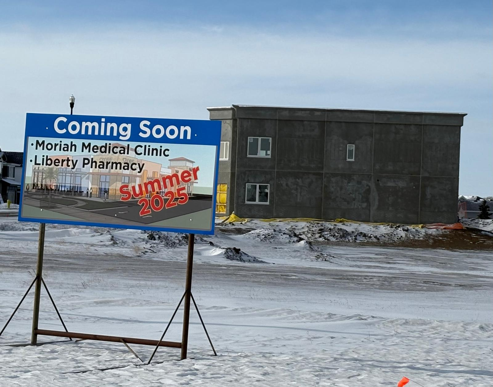

Moriah Medical Clinic is a clinic located in Red Deer County, Alberta in the Gasoline alley area opening August 1, 2025.
Our team is a group of experienced family physicians providing care across all scopes of general practice. We welcome both walk-ins and scheduled appointments to help patients get the help they need. We are dedicated to providing excellent and high-quality care to every patient.

Starting July 3, 2025, please call us at (587) 457-2673 to make an appointment. We are opening August 1, 2025.
518 Memorial Parkway #101, Red Deer County, AB T4E 3M7.